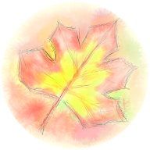

Краски октября
Пётр Косых
Играть онлайн
В то утро я, как обычно, был в своей мастерской. Капли дождя оставляли на стекле небольшого чердачного окна длинные следы. Я сидел на стуле и смотрел на картину, которую собирался закончить вот уже несколько дней...